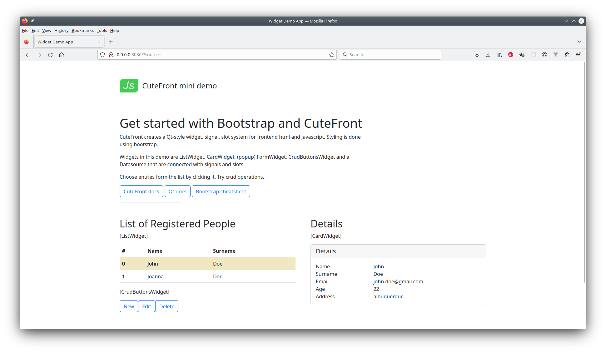

A Fullstack Example
a CRUD fullstack demo
An on-line demo is available here. It uses a mock data source (see below) instead of an actual backend.
Datasources
So, by now we have talked about Qt-style widgets that have signals and slots.
Datasources are things that handle the interface between the backend and the frontend and we can use the same signal/slot paradigm in their case. Consider the following:
We send a signal to datasource’s slot in order to request data
Datasource sends a signal carrying the data
Datasource has slots for CRUD operations
Datasource sends signals indicating error in the intercom with the backend
You can switch between an actual live datasource and a hard-coded dummy/mock datasource: they have exactly the same API
And last but not least:
Datasource sends a signal carrying the datamodel, i.e. metadata describing the actual data (fields, types, etc.)
Downstream widgets receiving the datamodel signal adjust their fields and forms to the datamodel, reducing the need to hard-code CRUD operations for different kinds of data
Here we provide a fullstack example featuring:
A FastAPI Python backend (works with both postgresql and litesql)
A frontend capable of doing CRUD operations on the backend
Frontend features three widgets: list, details card and three CRUD buttons (new, delete, update)
A datasource with the nice features just discussed above
Backend has a script that uses the backend’s pydantic data schemas to produce automagically CuteFront datasources which you can integrate directly into the frontend code
Said that, documenting these features in detail is out of the scope of this (frontend) library, so you’ll need to study the code instead.
Installing the Backend
For Plainfile (1) and Native (2) development modes (see below), you need first to install the backend into to your system:
sudo apt-get install sqlite3 nginx
virtualenv -p python3 venv
source venv/bin/activate
cd backend
pip3 install --user -e .
cd ..
my-backend db --drop --init --revision --upgrade
i.e., installing sqlite3 and nginx, creating a python virtualenv (skip if you feel so), installing the backend package and finally, initializing the database
1. Plainfile Run
Please read first about the “Plainfile” development environment in here and create a dedicated development profile.
Here we will just access bare .html and .js files. Typically you wouldn’t start a backend either, but work with mock data (in early development phases).
Run the backend with (emphasis on --cors):
my-backend run --cors
Backend API endpoints are now available in http://0.0.0.0:8080/docs
Point your browser to frontend/app.html (i.e. with the file://abs/path/to/ file url):
file://abs/path/to/app.html?source=http://0.0.0.0:8080
You can also use a mock (hardcoded debug datasource) instead of an actual backend with
file://abs/path/to/app.html
(i.e. dropping that ?source=http://0.0.0.0:8080 in the end)
Using mock data is a good option in the first stages of development
2. Native Run
Start backend with:
my-backend run
And in another terminal frontend with:
cd frontend
./nginx.py
Go with browser to http://0.0.0.0:8086/?source=
Backend API endpoints are avail in http://0.0.0.0:8086/docs
3. Docker Run
No extra installations (except for having docker-compose installed into your system) is required.
Please use the no-brainer bash scripts provided in directory bash:
bash/dev.bash build
bash/devreset.bash
bash/dev.bash up
That builds the images, inits the database and starts the containers
Go with your browser to http://localhost:8086/?source=
Backend API endpoints are available in http://0.0.0.0:8086/docs
Since we’re using very generic container names (“frontend” & “backend”), you might need to do this:
docker container prune
in order to get rid of earlier containers with identical names.
Internals
Here’s a nice HIMO diagram for understanding the fullstack example: it shows the signal-slot connections between the different widgets in the code.
Please also note how the global state is partitioned and cached into the widgets themselves (this was discussed also here):
Main html
- Creates object instances
- Create signal/slot connections (see ## below)
- Calls DataSource.read_slot()
- CardWidget & FormWidget adapt to the Datamodel
- ListWidget is insensitive to the Datamodel
- ListItemWidget must be subclassed for each Datamodel
PersonListWidget (subclassed from ListWidget)
// Shows a list of datums
// A single datum can be (un)chosen
STATE:
- ListItemWidget(s)
- Reference to active ListItemWidget
UP:
- signals.current_datum // carries complete datum (with uuid)
// of currently chosen element. null = nothing chosen
## connect to CardWidget.current_datum_slot
## connect to FormWidget.current_datum_slot
## connect to CrudButtonsWidget.current_datum_slot
IN:
- datums_slot // input: array of all datums
- Recreate all ListItemWidget(s)
- Set all ListItemWidget(s) to deactivated
- Activate one of them if there was a chosen ListWidget item & uuids match (by calling activate_slot)
- activate_slot
- For all items, call ListItemWidget.deactivate_slot
- For one item, call ListItemWidget.activate_slot
- signals.current_datum.emit
PersonListItemWidget (internal, subclassed from ListItemWidget)
// Data and html code corresponding to a single datum
// if chosen, highlighted
STATE:
- cached datum
UP: signals.clicked // carries uuid of activated item
## connect to parent ListWidget.activate_slot
IN:
- deactivate_slot
- activate_slot
getters:
- getDatum() // returns cached datum
ListItemWidget
...
ListItemWidget
...
...
CardWidget
// Shows detailed / all data of a datum
STATE: cached datum
IN:
- datamodel_slot // tells cardwidget to which datamodel to adapt
- current_datum_slot // input: complete datum (or null)
FormWidget
// A dialog that can be used to create or update datums
STATE:
- cached datum data in html form fields
- cached uuid of the datum. uuid == null means "create" mode
UP:
- signals.create // carries new datum
## connect to DataSource.create_slot
- signals.update // carries updated datum (with uuid)
## connect to DataSource.update_slot
IN:
- datamodel_slot // tell form widget to which datamodel to adapt
- create_slot // open the popup in "create" mode (check uuid == null)
- update_slot // open the popup in "update" mode (check uuid != null)
- current_datum_slot // input: complete datum (or null)
- alters the state by setting data into the html form fields
- null input clears the fields
DataSource
// Handles all CRUD operations with the backend
UP: signals.data // carries array of datums
## connect to ListWidget.datums_slot
IN:
- create_slot // input: a new datum (without uuid)
- read_slot // tell data source to refresh itself. no input
- update_slot // input: updated datum (with uuid)
- delete_slot // input: datum uuid
// NOTE: all slots do signals.datums.emit
CrudButtonsWidget
// A group of buttons: "new", "update", "delete"
STATE: visilibity of the buttons: delete & update are deactivated if current_datum_slot got null
UP:
- signals.create
## connect to FormWidget.create_slot
- signals.update
## connect to FormWidget.update_slot
- signals.delete
## connect to DataSource.delete_slot
IN: current_datum_slot // input: currently chosen datum (or null)